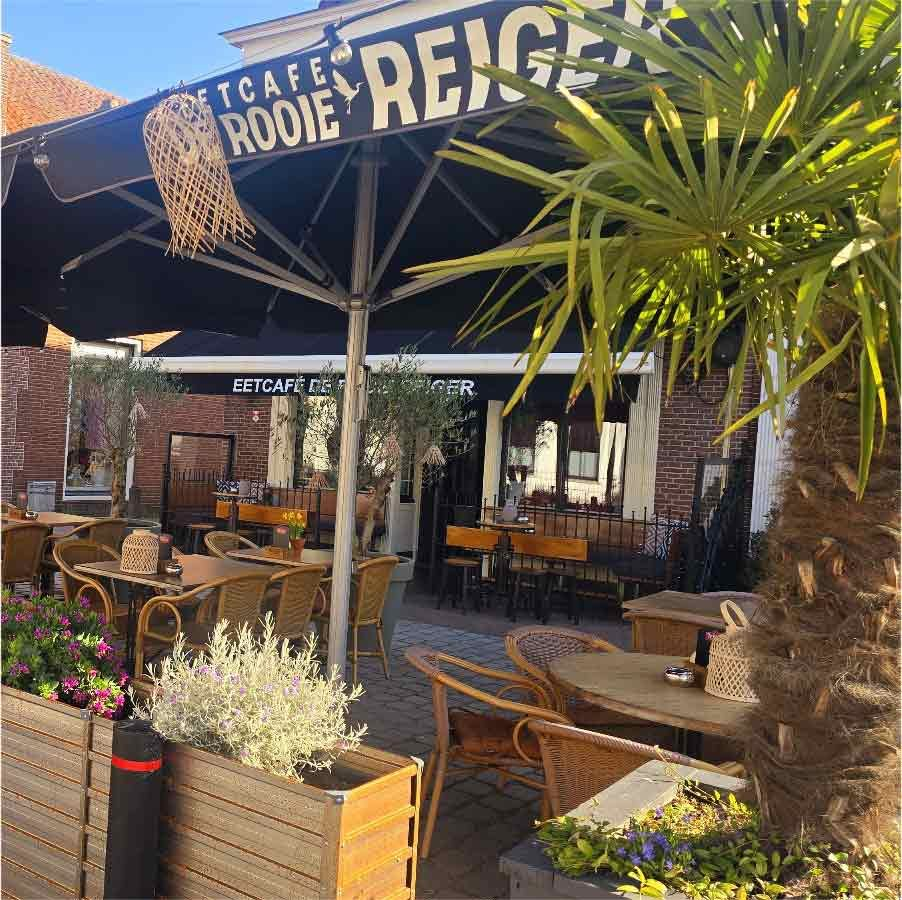
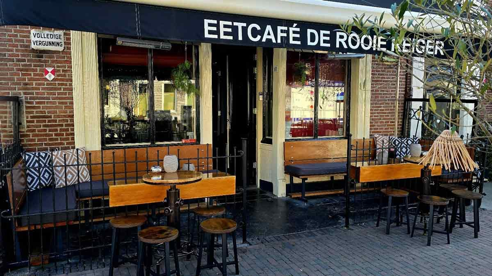
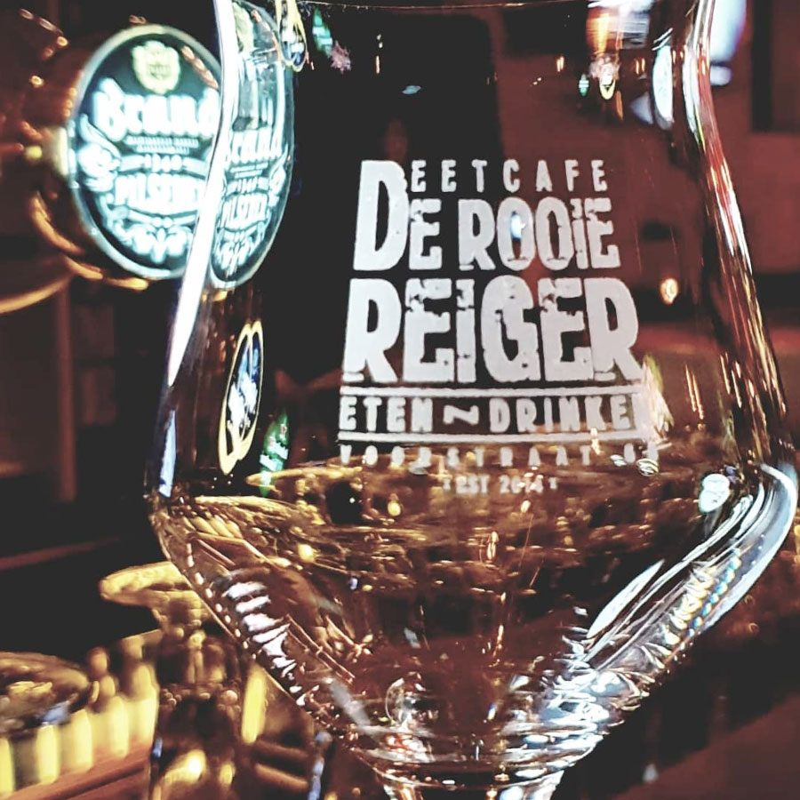
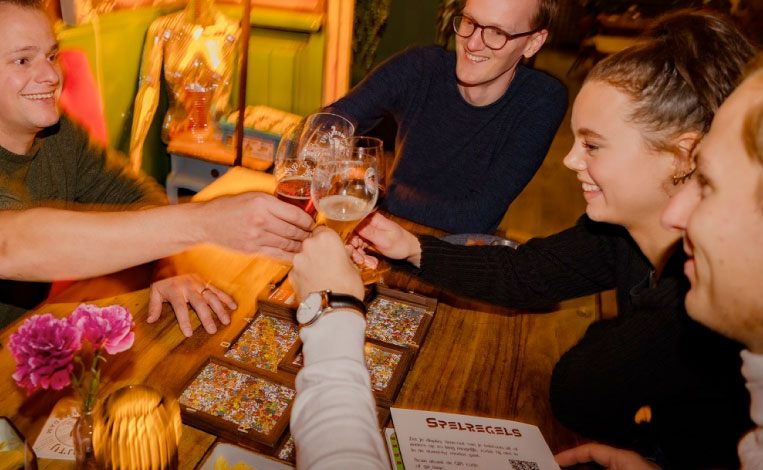

Voorstraat 68, midden in Vianen
EetcaféDe Rooie Reiger
Een plek waar gezelligheid en goed eten samenkomen. Voor een borrel, een uitgebreide maaltijd of gewoon een snelle hap: binnen in de warme sfeer of buiten op ons zonnige terras.



Geniet nooit met mate
Binnen geniet je van de warme, ontspannen sfeer, buiten van ons zonnige terras met een goed glas (huis)wijn en een smaakvol gerecht. Met een wisselend chefmenu, huisgemaakte specialiteiten en gastvrije service zorgen we ervoor dat iedereen zich thuis voelt.
Onze kaart wisselt regelmatig, met een seizoensgebonden chefmenu vol verrassende smaken. Of je nu komt voor lunch, diner of borrel: er is altijd iets nieuws te ontdekken.
- Reiger Blond. Ons eigen blonde bier, aan de tap én verwerkt in de traditionele Reigerstoof.
- Verse friet uit Vuren. Van Aardappelboerderij Van de Giessen: krokant van buiten, zacht van binnen. Liever zoete aardappelfriet? Kan ook.
- Huiswijn van de Reiger. Pinot Grigio, Merlot en rosé met ons eigen etiket, plus een wijnkaart van Grüner Veltliner tot Châteauneuf-du-Pape.

Puzzelproeverij
Klaar voor een diner vol avontuur? Verwacht geen standaard diner, maar een verrassende mix van lekker eten, gezelligheid en hersenkrakers.
Je kiest eerst je favoriete gerechten van het menu, maar die komen niet zomaar op tafel. Samen met je tafelgenoten los je puzzels en raadsels op om stukje bij beetje het diner te ontgrendelen. Spannend, gezellig én vooral heel lekker.
Alleen tijdens het diner in de avond.
Reserveer via puzzelproeverij.nlKom ook de sfeer proeven
We houden wel van een beetje reuring: speciale eetavonden, thema-avonden en verrassende dinerervaringen. En als de Voorstraat feest viert, doen wij mee.
- DecemberKerstmarktIn de binnenstad: kerstmarkt en verlichte trucks.
- AprilKoningsdagGezellige kleedjesmarkt en live muziek.
- MeiRockin' the StreetDe hele dag meerdere podia met live rock-'n-roll op de Voorstraat. Ook bij ons terras!
- MeiSleepbootdagen 2027Donderdag warenmarkt op de Voorstraat. Bij ons een live zanger voor de deur!
- SeptemberProef VianenKom lekker mondvermaakjes proeven.
- OktoberPaardenmarktWarenmarkt op de Voorstraat. Muziek bij ons op het terras!
- OktoberHalloweenVan 18.00 tot 20.00 uur Halloween op de Voorstraat.
- NovemberSinterklaasOverdag de intocht van Sinterklaas in de binnenstad.
Niets missen? Meld je aan voor onze WhatsApp-verzendlijst en houd onze social media (Facebook, Instagram en TikTok) in de gaten.
Aanmelden voor de WhatsApp-lijstBiertap huren
Een biertap voor je feest, evenement of borrel? Je huurt bij ons eenvoudig een tafeltap of een tapkoelkast met ingebouwde koeling, en het bier bestel je er meteen bij. Geen gedoe, gewoon perfect gekoeld bier van de tap.
Tafel Cooltap
Ideaal voor wat kleinere, gezellige feestjes. Het is een droogkoeler: je hoeft hem niet met water te vullen. Fustje aankoppelen, stekker in het stopcontact en na zo'n 15 minuten tap je een heerlijk koud pilsje.
Koolzuur: € 15,00 per inhoud tot 50 liter bier, excl. borg. Graag meebestellen.
David tap
Zelf tappen op je feest, bruiloft of bedrijfsfeest. De mobiele tap koelt twee fusten van 20 liter: één aan de kraan, de volgende alvast voorkoelen. Eén fust geeft ongeveer 80 glazen pils.
- Afmetingen: 150 cm hoog, 55 cm lang, 60 cm breed
- Heeft ongeveer 12 tot 16 uur nodig om goed te koelen
- Meer dan 2 fusten? Die koel je zelf voor
- Fusten met speciale aansluiting voor het David-systeem
- Koolzuur eventueel met een borg van € 50,00, retour na inleveren en nakijken
Let op: deze tap mag beslist niet liggend vervoerd worden.
Bierfusten
Fusten van 20 liter (ongeveer 80 glazen), en ook van 30 en 50 liter. Heineken, Amstel, Brand of Birra Moretti.
Ook tappils te koop
Zo heb je alles in één keer geregeld. Vraag naar de beschikbaarheid en scherpe prijzen.
Werken bij de Reiger
Bij De Rooie Reiger werk je in een gezellige, informele sfeer waar teamwork en gastvrijheid voorop staan. Samen zorgen we ervoor dat elke gast zich welkom voelt.
- Bar- / bedieningsmedewerker5–20 uur p/w
- Zelfstandig werkend kok / souschef10–32 uur p/w
- Afwashulp / keukenhulp5–32 uur p/w
Hey topper! We staan altijd open voor nieuw horecatalent. Stuur je (open) sollicitatie naar info@cafederooiereiger.nl.
Stuur je sollicitatieGoed om te weten
Zijn jullie het hele jaar open?
Ja, zeker! We zijn het hele jaar open van woensdag tot en met maandag, behalve op Eerste Kerstdag.
Kan ik bij jullie reserveren?
Ja. Bel ons op 0347 320 295 of mail naar info@cafederooiereiger.nl.
Welke frieten gebruiken jullie?
Verse frieten van Aardappelboerderij Van de Giessen uit Vuren. Liever iets anders? Kies dan voor zoete aardappelfriet.
Hebben jullie vegetarische opties?
Ja, op de kaart staan onder meer de vega borrelmix, vega kroketten, salade geitenkaas en gyoza met groenten. De pulled chicken-gerechten zijn ook vega verkrijgbaar.
Kunnen groepen ook reserveren?
Zeker. Voor groepen hebben we een aangepast menu. Neem even contact op.
Waar kan ik parkeren?
Op de Voorstraat of op een van de parkeerterreinen in het centrum; meestal gratis of tegen betaling, afhankelijk van de tijden. Je fiets kun je kwijt vlak bij de ingang.
Andere vraag? Mail ons gerust.
Kom snel langs!
We liggen centraal in Vianen, vlak bij het gemeentehuis, midden in het centrum. Makkelijk bereikbaar met de auto, de fiets of te voet.
Openingstijden
| Maandag | 12:00 – 22:00 |
| Dinsdag | gesloten |
| Woensdag | 12:00 – 22:00 |
| Donderdag | 12:00 – 22:00 |
| Vrijdag | 12:00 – 00:00 |
| Zaterdag | 12:00 – 00:00 |
| Zondag | 12:00 – 21:30 |
Het hele jaar open, alleen op Eerste Kerstdag gesloten.
Adres & contact
Eetcafé De Rooie Reiger
Voorstraat 68
4132 AT Vianen (Utrecht)
0347 320 295
info@cafederooiereiger.nl
Parkeren op de Voorstraat of op een van de parkeerterreinen in het centrum. Fietsen vlak bij de ingang.
Plan je route